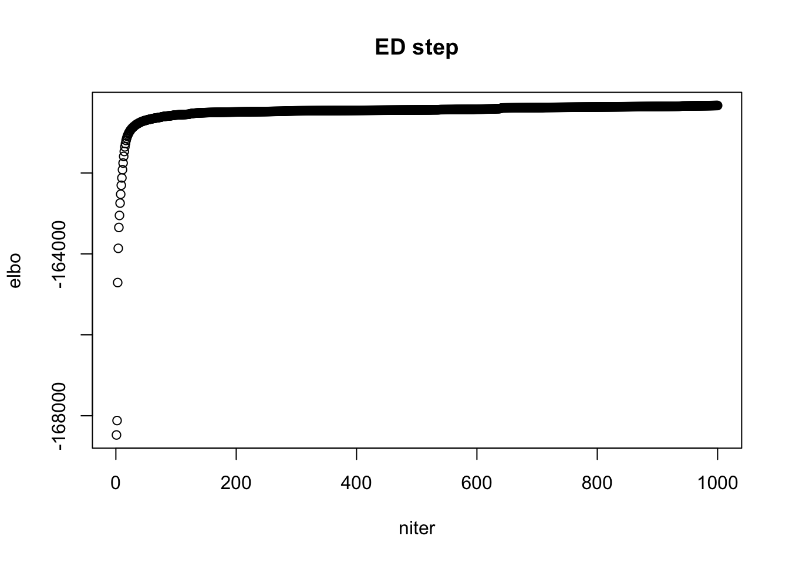
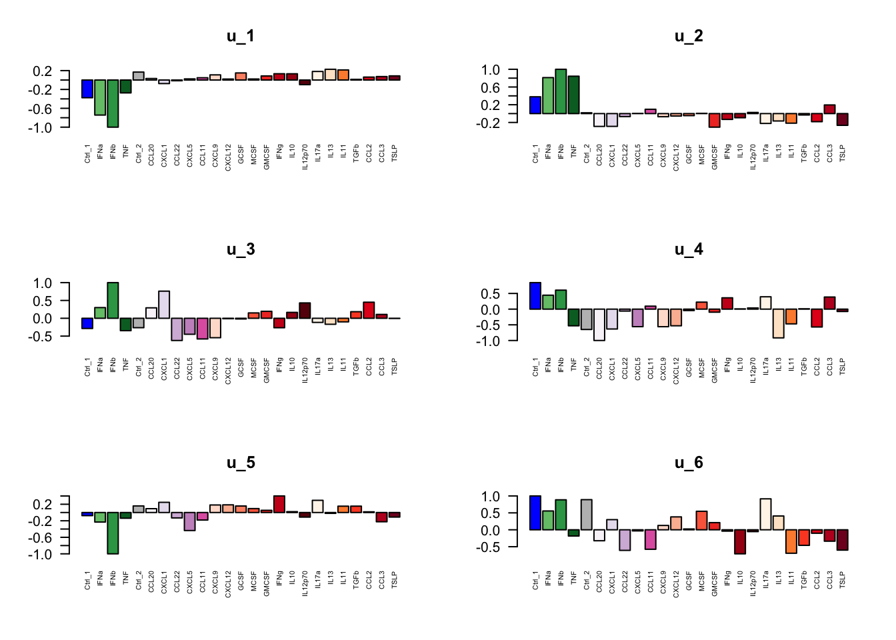
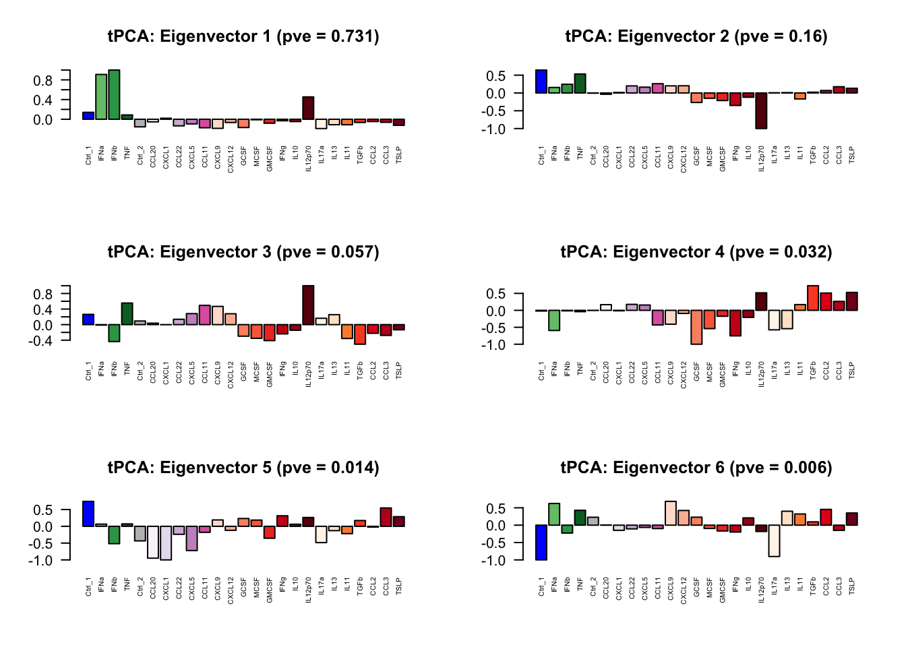
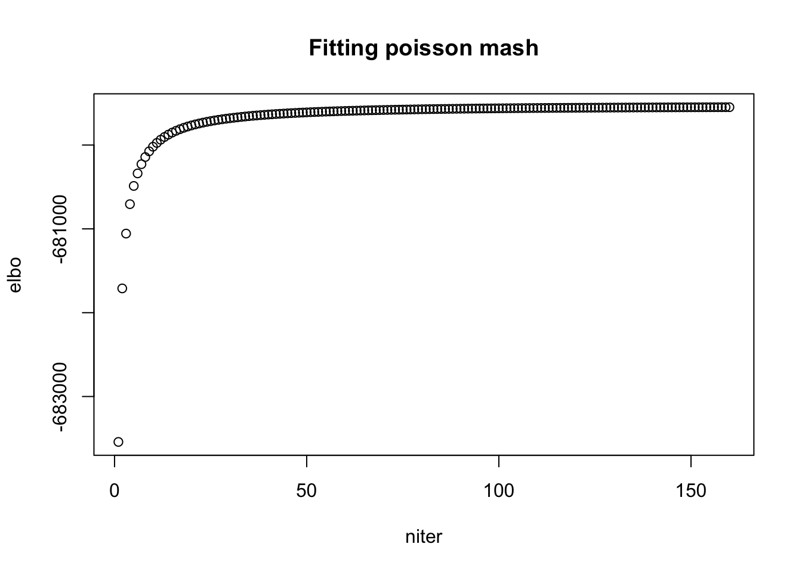
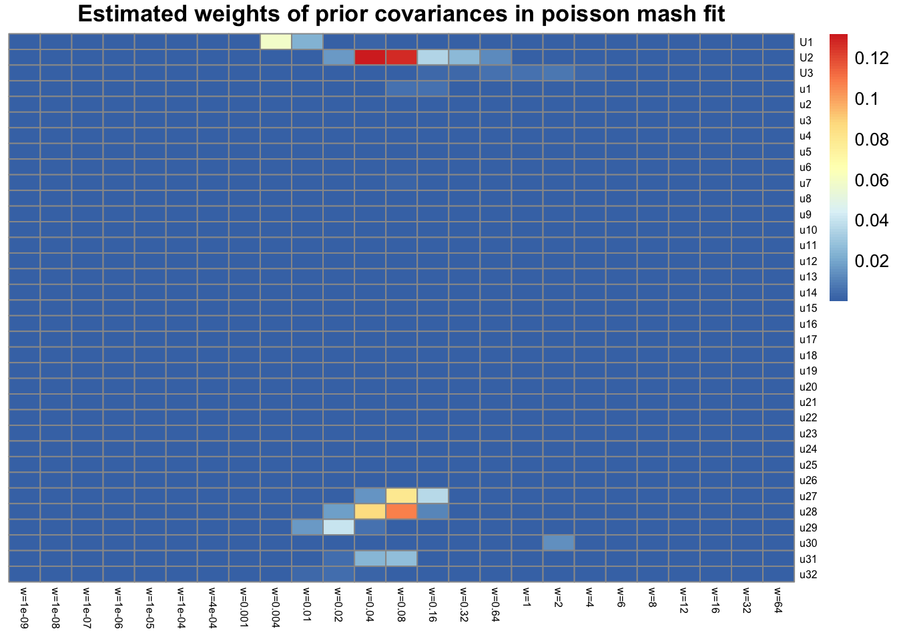

Last updated: 2020-06-26
Checks: 7 0
Knit directory: poisson_mash/
This reproducible R Markdown analysis was created with workflowr (version 1.6.2). The Checks tab describes the reproducibility checks that were applied when the results were created. The Past versions tab lists the development history.
Great! Since the R Markdown file has been committed to the Git repository, you know the exact version of the code that produced these results.
Great job! The global environment was empty. Objects defined in the global environment can affect the analysis in your R Markdown file in unknown ways. For reproduciblity it’s best to always run the code in an empty environment.
The command set.seed(20200618) was run prior to running the code in the R Markdown file. Setting a seed ensures that any results that rely on randomness, e.g. subsampling or permutations, are reproducible.
Great job! Recording the operating system, R version, and package versions is critical for reproducibility.
Nice! There were no cached chunks for this analysis, so you can be confident that you successfully produced the results during this run.
Great job! Using relative paths to the files within your workflowr project makes it easier to run your code on other machines.
Great! You are using Git for version control. Tracking code development and connecting the code version to the results is critical for reproducibility.
The results in this page were generated with repository version 48262ed. See the Past versions tab to see a history of the changes made to the R Markdown and HTML files.
Note that you need to be careful to ensure that all relevant files for the analysis have been committed to Git prior to generating the results (you can use wflow_publish or wflow_git_commit). workflowr only checks the R Markdown file, but you know if there are other scripts or data files that it depends on. Below is the status of the Git repository when the results were generated:
Ignored files:
Ignored: .DS_Store
Ignored: .Rhistory
Untracked files:
Untracked: code/util6.R
Untracked: code/util_ed.R
Untracked: data/data_jr.RData
Untracked: output/ed_v1_maxiter1000.Rds
Untracked: output/ed_v2_maxiter1000.Rds
Untracked: output/mash_fit_limma.rds
Untracked: output/poisson_mash_fit.Rds
Untracked: output/poisson_mash_fit_contrast_posterior.Rds
Note that any generated files, e.g. HTML, png, CSS, etc., are not included in this status report because it is ok for generated content to have uncommitted changes.
These are the previous versions of the repository in which changes were made to the R Markdown (analysis/poisson_mash.Rmd) and HTML (docs/poisson_mash.html) files. If you’ve configured a remote Git repository (see ?wflow_git_remote), click on the hyperlinks in the table below to view the files as they were in that past version.
| File | Version | Author | Date | Message |
|---|---|---|---|---|
| Rmd | 48262ed | yushaliu | 2020-06-26 | Add poisson mash fit results |
We apply poisson mash to a subset of the single cell cytokines data. The count data matrix \(X\) is \(14,853 \times 25\), where \(X_{jr}\) represents the read counts of gene \(j\) in condition \(r\).
load("data/data_jr.RData")
source("code/util6.R")
idx <- c(1:10, 16:25, 46:50)
data <- data.jr[,idx]
s <- s.r[idx]/8
rm(data.jr, s.r)
dim(data)[1] 14853 25Let \(\tilde{\beta}_j = \log(\lambda_{j}) - \mu_j 1\), \[\begin{align} & \tilde{\beta}_j = \sum_{h, l} \pi_{h, l} \: MVN(0, \: w_l U_h) + \sum_{g, l} \pi_{g, l} \: MVN(0, \: w_l u_g u'_g) \\ \text{where} \quad & \sum_{h, l} \pi_{h, l} + \sum_{g, l} \pi_{g, l} = 1. \\ \end{align}\]
To estimate the data-driven prior covariances \(U_h\) and \(u_g u'_g\), we fit the poisson mash model without scaling parameters \(w_l\) to a subset of genes that are differentially expressed across conditions, which are identified based on a conditional multinomial goodness-of-fit test.
## identify the subset of differentially expressed genes and initialize the data-driven prior covariances
res.pca <- pois_cov_pca(data, s, npc=6, min.count=5)
subset <- res.pca$subset
data.ed <- data[subset,]
## the number of differentially expressed genes identified by the multinomial goodness-of-fit test
dim(data.ed)[1] 2287 25## load in the ED results
fit.ed <- readRDS("output/ed_v2_maxiter1000.Rds")
## running time per iteration in ED
fit.ed$runtime/length(fit.ed$ELBO) user system elapsed
8.858428 0.026125 8.889045 ## estimated weights for different candidate data-driven prior covariances
fit.ed$pi[1] 0.43724692 0.20950659 0.10378902 0.09685339 0.03650651 0.06043786 0.03888176
[8] 0.01677795## look at the ELBO
plot(fit.ed$ELBO, xlab = "niter", ylab = "elbo", main="ED step")
library(RColorBrewer)
cols.all <- c("blue", brewer.pal(n=5,name="Greens")[3:5], "gray", brewer.pal(n=9,name="PuRd"),
brewer.pal(n=9,name="Reds"), brewer.pal(n=9,name="Oranges"),
brewer.pal(n=9,name="Purples"), brewer.pal(n=9,name="YlOrRd"))
cols.trt <- cols.all[idx]
par(mfrow=c(3,2))
## the estimate of the eigenvector corresponding to positive eigenvalue, initialized by PCA-based rank-1 covariance matrix
for (k in 1:6){
v <- fit.ed$ulist[[k]]
barplot(v/max(abs(v)), names = names(s), cex.names = 0.5,
las = 2, main = names(fit.ed$ulist)[k], col = cols.trt)
}
## the estimate of the top eigenvectors, initialized by PCA-based rank-6 covariance matrix
eig.tPCA <- eigen(fit.ed$Ulist[[1]])
pve.tPCA <- eig.tPCA$values/sum(eig.tPCA$values)
for (k in 1:6){
v <- eig.tPCA$vectors[,k]
barplot(v/max(abs(v)), names = names(s), cex.names = 0.5,
las = 2, main = paste0(names(fit.ed$Ulist)[1], ": Eigenvector ", k, " (pve = ", round(pve.tPCA[k],3), ")"), col = cols.trt)
}
We then fit the poisson mash model to all the genes in \(X\) which have at least 10 total read counts in all conditions. There are 10,726 such genes.
## remove genes that have fewer than 10 read counts in all 25 conditions
data <- data[rowSums(data) >= 10,]
dim(data)[1] 10726 25## load in the poisson mash fit results
res <- readRDS("output/poisson_mash_fit.Rds")
res$runtime user system elapsed
8137.773 67.577 8210.139 ## look at ELBO
plot(res$ELBO, xlab = "niter", ylab = "elbo", main="Fitting poisson mash")
## look at the estimated weights of prior covariance matrices
library(pheatmap)
library(gridExtra)
wlist <- c(1e-9, 1e-8, 1e-7, 1e-6, 1e-5, 1e-4, 4e-4, 1e-3, 4e-3, 1e-2, 2e-2, 4e-2, 8e-2, 0.16, 0.32, 0.64,
1, 2, 4, 6, 8, 12, 16, 32, 64)
pi.mat <- matrix(res$pi, nrow=35, byrow=TRUE)
rownames(pi.mat) <- c(paste0("U", 1:3), paste0("u", 1:32))
colnames(pi.mat) <- paste0("w=", wlist)
pheatmap(pi.mat, cluster_rows=FALSE, cluster_cols=FALSE, fontsize_row = 6, fontsize_col=6, main="Estimated weights of prior covariances in poisson mash fit")
We use the output from poisson mash fit to calculate posterior summaries of \(\delta_{jr} = \tilde{\beta}_{jr} - \sum_{r=1}^R \tilde{\beta}_{jr}\), i.e., the condition-specific deviation from the mean across all conditions, and compare to the results from mash. We apply mash to only genes that have reads in at least \(25*4=100\) cells. There are 7,659 such genes. In mash, we calculate \(\hat{s}_{jr}\) assuming that the observation noise is constant across conditions.
## load in the posterior summaries from poisson mash fit
post <- readRDS("output/poisson_mash_fit_contrast_posterior.Rds")
## load in the mash fit
mash.fit <- readRDS("output/mash_fit_limma.rds")
## the estimated weights of prior covariances in mash
mashr::get_estimated_pi(mash.fit) null identity -mean trtCCL2-mean trtCCL20-mean
0.157496829 0.003368933 0.000000000 0.022234728 0.001028350
trtCCL22-mean trtCCL3-mean trtCtrl_1-mean trtCtrl_2-mean trtCXCL1-mean
0.000000000 0.004015278 0.030054255 0.000000000 0.000000000
trtCXCL12-mean trtCXCL5-mean trtCXCL9-mean trtGCSF-mean trtGMCSF-mean
0.019973339 0.000000000 0.000000000 0.000000000 0.000000000
trtIFNa-mean trtIFNb-mean trtIFNg-mean trtIL10-mean trtIL11-mean
0.000000000 0.003965387 0.000000000 0.000000000 0.000000000
trtIL12p70-mean trtIL13-mean trtIL17a-mean trtMCSF-mean trtTGFb-mean
0.000000000 0.000000000 0.000000000 0.002186730 0.000000000
trtTNF-mean equal_effects simple_het_1 simple_het_2 simple_het_3
0.013706168 0.000000000 0.000000000 0.000000000 0.001180039
ED_PCA_1 ED_PCA_2 ED_PCA_3 ED_PCA_4 ED_PCA_5
0.266183528 0.000000000 0.000000000 0.008673847 0.025652981
ED_PCA_6 ED_tPCA
0.020061918 0.420217690 ## the number of significant genes identified by poisson mash (in 10,726 genes tested)
lfsr <- post$lfsr
idx.pois.mash <- which(apply(lfsr, 1, min) < 0.05)
length(idx.pois.mash)[1] 1634## the number of significant genes identified by mash (in 7,659 genes tested)
idx.mash <- mashr::get_significant_results(mash.fit)
length(idx.mash)[1] 934## the number of genes that are identified by both poisson mash and mash
sum(names(idx.mash) %in% names(idx.pois.mash))[1] 836## the number of genes that are identified only by poisson mash (in 7,659 genes tested)
pois_mash_only <- idx.pois.mash[!(names(idx.pois.mash) %in% names(idx.mash)) & (names(idx.pois.mash) %in% rownames(mash.fit$result$lfsr))]
length(pois_mash_only)[1] 636## the number of genes that are identified only by mash
mash_only <- idx.mash[!(names(idx.mash) %in% names(idx.pois.mash))]
length(mash_only)[1] 98
sessionInfo()R version 3.6.2 (2019-12-12)
Platform: x86_64-apple-darwin15.6.0 (64-bit)
Running under: macOS Catalina 10.15.5
Matrix products: default
BLAS: /Library/Frameworks/R.framework/Versions/3.6/Resources/lib/libRblas.0.dylib
LAPACK: /Library/Frameworks/R.framework/Versions/3.6/Resources/lib/libRlapack.dylib
locale:
[1] en_US.UTF-8/en_US.UTF-8/en_US.UTF-8/C/en_US.UTF-8/en_US.UTF-8
attached base packages:
[1] stats graphics grDevices utils datasets methods base
other attached packages:
[1] gridExtra_2.3 pheatmap_1.0.12 RColorBrewer_1.1-2 psych_1.9.12.31
[5] workflowr_1.6.2
loaded via a namespace (and not attached):
[1] Rcpp_1.0.4.6 plyr_1.8.6 compiler_3.6.2 mashr_0.2.21
[5] later_1.0.0 git2r_0.27.1 tools_3.6.2 digest_0.6.25
[9] evaluate_0.14 lifecycle_0.2.0 nlme_3.1-147 gtable_0.3.0
[13] lattice_0.20-41 rlang_0.4.6 Matrix_1.2-18 yaml_2.2.1
[17] parallel_3.6.2 mvtnorm_1.1-0 xfun_0.13 invgamma_1.1
[21] stringr_1.4.0 knitr_1.28 fs_1.4.1 rprojroot_1.3-2
[25] grid_3.6.2 glue_1.4.1 R6_2.4.1 rmarkdown_2.1
[29] mixsqp_0.3-43 rmeta_3.0 irlba_2.3.3 ashr_2.2-50
[33] magrittr_1.5 whisker_0.4 backports_1.1.7 scales_1.1.1
[37] promises_1.1.0 htmltools_0.4.0 assertthat_0.2.1 abind_1.4-5
[41] mnormt_1.5-7 colorspace_1.4-1 httpuv_1.5.2 stringi_1.4.6
[45] munsell_0.5.0 truncnorm_1.0-8 SQUAREM_2020.2